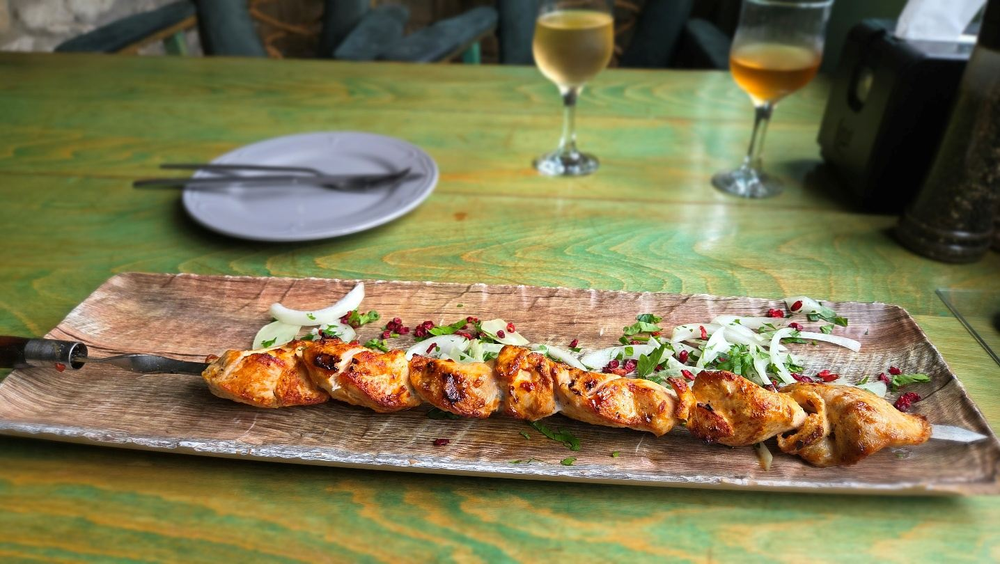
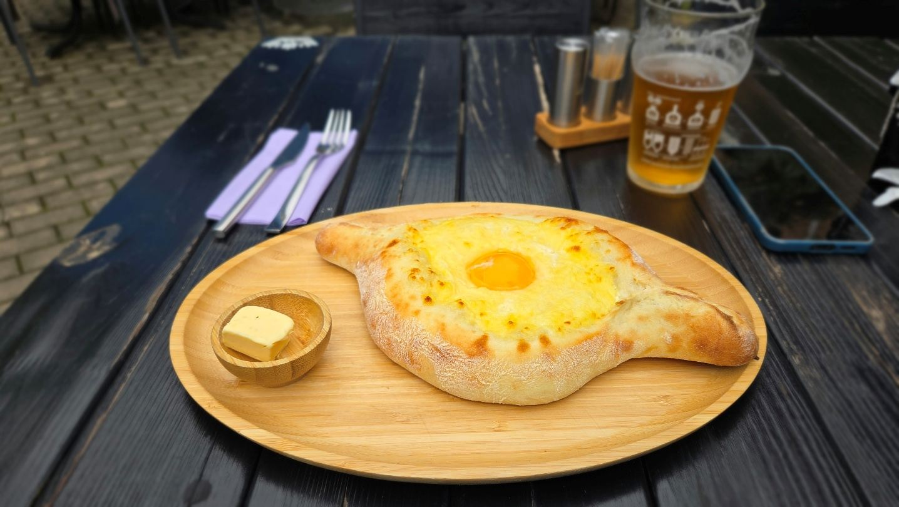
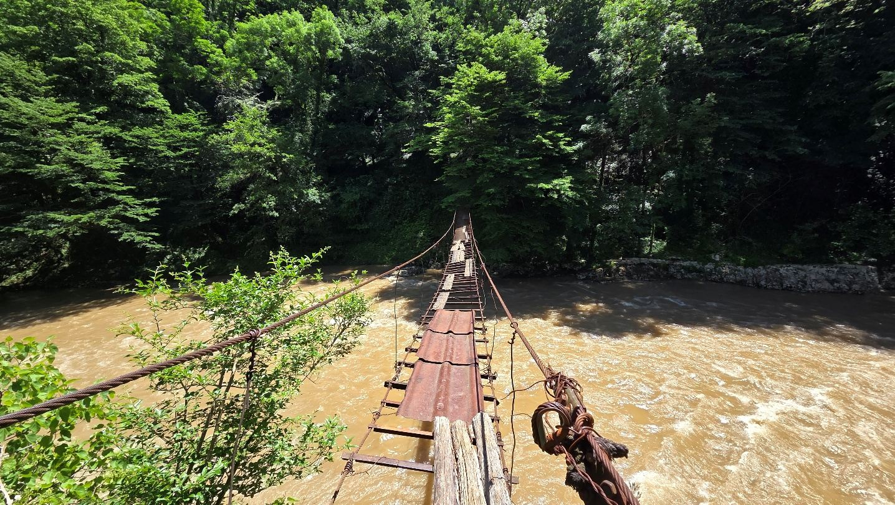
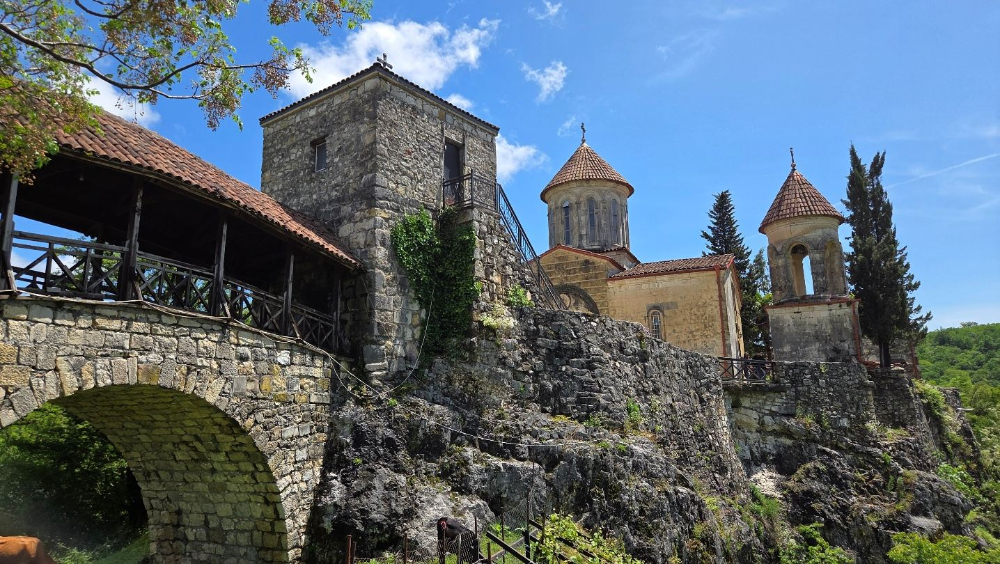
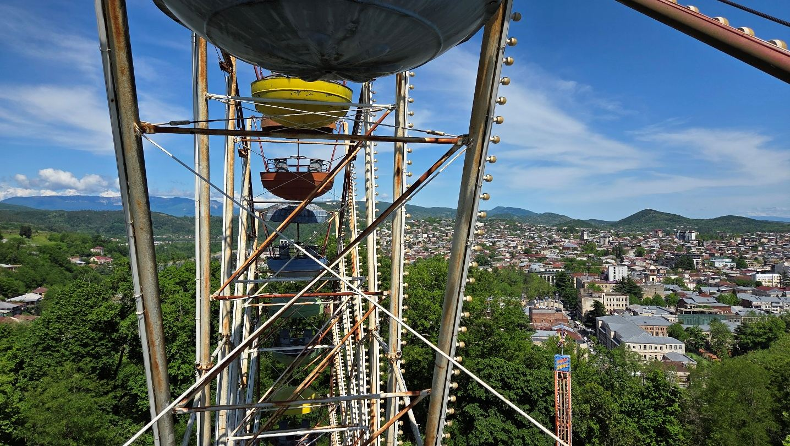
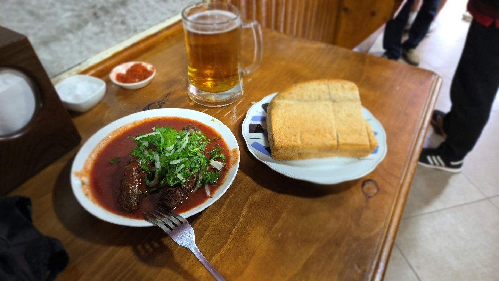
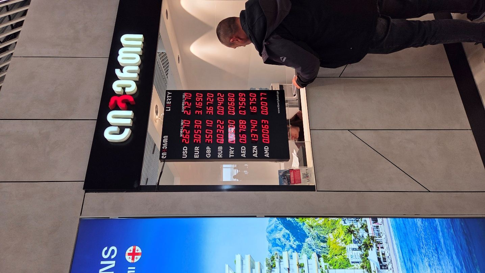

Z cest
Kutaisi: dvakrát po třech dnech, sám a bez auta
Skoro bych nevěřil, že na „stará kolena" budu vyrážet do zemí bývalého Sovětského svazu. Byl jsem v Kutaisi dvakrát — poprvé v dubnu 2025, podruhé v květnu 2026 — pokaždé sám a pokaždé na tři dny. Tenhle text je hlavně o té druhé cestě, protože jsem si při ní opravil chyby z první.
Auto jsem nepůjčoval ani jednou a nechybělo mi.
Program po dnech
1. den — příjezd a Zelený bazar
Z letiště maršrutkou, ubytování a pak rovnou pěšky na tržiště Zelený bazar.
Kupte si tam gruzínskou sůl. Nejlíp asi vyjde u paní, která ji prodává v podloubí před tržnicí v malých sáčcích — ne uvnitř, kde je to připravené pro turisty.
Večeře v restauraci Magnolia s výhledem na řeku. Dobré víno, chinkali, šašlik.

2. den — Motsameta, Bagrati a ruské kolo
Snídaně ve Fleur hned vedle ubytování.

Pak pěší procházka ke klášteru Motsameta. Jde se velký kus po vlakových kolejích — vlak tam už podle všeho nejezdí — a pohodlné to není. Ten klášter mě ale nadchl. Má atmosféru, je tam absolutní minimum lidí a člověk si prostě sedne a nasává klid. Za oltářem je průlez; zeptejte se Jarvise, o co jde. Dá se sejít až dolů k řece, kde je visutý most. Netroufl jsem si, ale ta stezka není zase tak hrozná. Doporučuju.


Zpátky pěšky k hlavní cestě a odtud Boltem za 10,90 GEL ke katedrále Bagrati — nádherná, s výhledem na celé Kutaisi.
Pak pěšky do parku Gabashvili. Tamní ruské kolo je neskutečné a stojí 3 GEL. Dolů do města lanovkou za 5.

Večeře v Bikentias Kebabery. Rozhodně zajděte: mají jedno jediné jídlo a stoly jen ke stání.

3. den — odjezd
Boltem na letiště za 25 GEL a domů.
Náklady
Tady musím být upřímný: celkovou částku jsem si nespočítal. Nevedl jsem si útratu za jídlo ani za drobnosti, takže součet, který bych sem napsal, by byl vymyšlený.
Co vím jistě, jsou tyhle položky:
- Letenka Katowice–Kutaisi s Wizzem: zhruba 1 600 Kč, a to v obou případech (2025 i 2026).
- Ubytování Happy Home, dvě noci v roce 2026: 1 350 Kč.
- Maršrutka z letiště: kolem 40 Kč.
- Bolt po městě: 10,90 GEL ke katedrále, 25 GEL na letiště.
- Ruské kolo 3 GEL, lanovka 5 GEL.
Jídlo, sůl a víno v tom nejsou. Celkově je ale Kutaisi levné — to je vedle atmosféry hlavní důvod, proč jsem se vracel.
Co bych udělal jinak
Ubytování blíž centru. Podruhé jsem zvolil bližší adresu než poprvé a bylo to správně. Příště zase tak.
Ověřil bych si cenu maršrutky předem. Napoprvé mě řidič natáhl — myslím, že mi řekl asi trojnásobek toho, co se platí normálně. Aktuální ceny bývají na polském fóru fly4free, mrkněte tam před odjezdem. Odkaz je v rozcestníku.
A možná bych ke klášteru nešel po kolejích. I když… byl tam klid a pohoda, takže nevím.
Letenka
Z Katowic s Wizz Air, obě cesty za zhruba 1 600 Kč (2025 a 2026). Kutaisi je pro Wizz jedna ze stálých linek, takže se dá chytit levně opakovaně.
Doprava na letiště
Autem, parkoviště Rafax jako vždycky. Odtud je to 400 metrů pěšky na terminál.
Salonky
Katowice zrušily přístup přes LoungeKey pro lety v Schengenu, ale mimo Schengen to pořád jde — což je přesně případ Gruzie. Základní salonek, nic velkolepého, ale neurazí. A ke gatu je to asi minuta.
Data a e-SIM
SIM kartu jsem kupoval přímo na letišti v Kutaisi. Vyjde levněji než e-SIM přes Airalo a je to úplně jednoduché. Peníze jsem měnil taky na letišti, kurz byl podobný jako ve městě.

Aktuální ceny a operátory hledejte na fly4free, mění se to.
Ubytování
Přes Booking. Druhý pobyt byl Happy Home, dvě noci za 1 350 Kč (2026). Blíž centru než poprvé, což se vyplatilo.
Místní doprava
Z letiště maršrutkou. Zastavuje u hlavní cesty asi sto metrů před letištěm a jede k McDonaldu na kraji města. Odtud dál Boltem (funguje i Yandex) na ubytování.
Ve městě všude Boltem, jízdy vycházejí na pár lari.
Kde jsem jedl
- Magnolia — výhled na řeku, dobré víno, chinkali, šašlik.
- Fleur — snídaně.
- Bikentias Kebabery — jedno jediné jídlo na jídelním lístku, stoly jen ke stání. Nejlepší zážitek z jídla za celý pobyt.
Postřehy
Vracel jsem se i kvůli soli. Svanetská sůl je fakt výborná a až mi dojde, nejspíš pojedu znovu.
I bez ní je ale Kutaisi dobrá volba na tři dny: nízké ceny, trochu komunistická atmosféra a to ruské kolo, které opravdu vede.
Příště budu možná uvažovat o pár dnech v Batumi — jen trefit maršrutku, která tam jede. Podívejte se na ceny mimo sezónu v mrakodrapech u pláže, budete překvapení; klidně kolem 300 Kč za noc.
Zvažoval jsem taky jet busem rovnou do Tbilisi. Busy skoro vždycky navazují na přílet letadla, ale jsou to skoro čtyři hodiny jízdy.